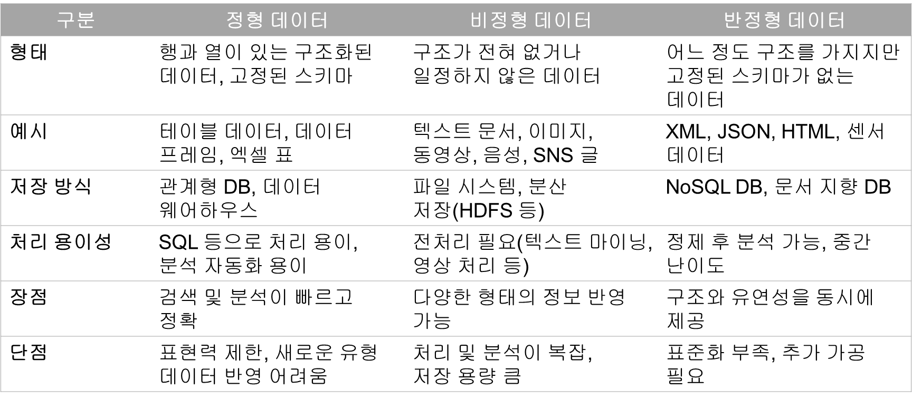

세 가지 사이언스의 융합과 오픈소스 프로그래밍 1
세 가지 사이언스의 융합
세 가지 사이언스의 융합


오픈공간데이터사이언스
오픈공간데이터
로빈 윌슨(Robin Wilson)의 블로그
GitHub: epibayes/john-snow-data
공간데이터사이언스
데이터사이언스
Data Science


데이터사이언스는 원(raw) 데이터로부터 지식, 이해, 통찰을 획득하기 위해 수학 및 통계학, 컴퓨터 과학, 도메인(분야) 지식에서 발전해 온 이론, 기술, 방법론 등을 융합적으로 활용하는 간학문적 영역
지식, 이해, 통찰을 효과적으로 소통하고, 현실 문제 해결에 대안을 제시
원데이터: 빅 데이터

원데이터: 유형

원데이터: 유형

원데이터: JSON
구조는 존재
구분 규칙({ }, [ ], :) 존재
기계가 파싱(parsing)하기 용이
완전한 비정형(자유 텍스트, 이미지 등)은 아님
스키마는 유연
관계형 DB처럼 고정된 컬럼 정의를 강제하지 않음
같은 데이터셋 안에서도 레코드마다 필드를 다르게 하거나 새 필드 추가 등이 용이
정형 데이터처럼 엄격히 표준화된 구조는 아미

지식, 이해, 통찰: DIKW 모형

이론, 기술, 방법론: 데이터사이언스의 심장
탐색적 데이터 분석(exploratory data analysis, EDA)
통계학(+ 수학) 위주
변형(transformation), 요약(summarization), 시각화(visalization)
머신러닝(machine learning, ML)
컴퓨터과학(+ 수학) 위주
전통적 머신러닝: 의사결정 트리, 랜덤 포레스트, 서포트 벡터 머신
인공신경망 기반 다양한 딥러닝 기법
LLM(large language model, 거대 언어 모델): 생성형 AI
결합: “LLM-기반 EDA”
EDA: 역사

(Karl Pearson)
(1857-1936)
영국

(Ronald A. Fisher)
(1890-1962)
영국

(Thomas Bayes)
(1701-1761)
영국

(John Tukey)
(1915-2000)
미국
EDA: 정의 및 핵심 기법
정의: 데이터와의 상호작용을 통해 다음을 행하는 과정
데이터 구조 이해
패턴 탐지 및 이례적 현상 확인
모형 평가 및 가설 설정
핵심 기법
변형: 데이터의 구조를 변경하여 요약 및 시각화가 용이하게 하는 과정
요약: 데이터를 요약해주는 통계값의 산출 및 정리
시각화: 데이터의 다양한 측면을 검토할 수 있게, 데이터를 그래픽으로 전환하는 과정


머신러닝: 정의와 특징
정의
- 데이터로부터 패턴을 학습하여 예측이나 분류를 수행하는 인공지능의 한 분야
특징
데이터 기반 학습: 알고리즘이 주어진 데이터에서 규칙 및 패턴을 스스로 찾아냄
일반화 능력: 학습한 패턴을 새로운 데이터에 적용할 수 있음
반복적 성능 개선: 더 많은 데이터와 더 나은 알고리즘을 통해 성능 향상 가능
응용 분야: 이미지 인식, 음성 인식, 추천 시스템, 자연어 처리, 자율 주행, 의료 진단 등

머신러닝: 주요 기법


데이터사이언스 과정: EDA 중심

데이터사이언스 과정
해들리 위컴(Hadley Wickham)

데이터사이언스 과정
해들리 위컴(Hadley Wickham)

데이터사이언스 과정
해들리 위컴(Hadley Wickham)

데이터사이언스 경관

오픈사이언스
Open Science


과학 혹은 철학 혹은 운동


정의와 핵심 가치
정의
- 연구 설계, 데이터 수집, 분석, 결과의 공개 및 재현 검증 등 과학 연구 과정 전반을 투명하고 개방적으로 수행·공유함으로써, 연구의 신뢰성과 재현성을 제고하고 과학 지식을 공공재로 확립하려는 학문적·사회적 운동
- “연구 관행의 새로운 패러다임”
핵심 가치
개방성(openess): 연구 결과(논문, 데이터, 코드)에 누구나 접근
재현가능성(reporducibility): 동일한 데이터와 방법으로 결과 검증
참여와 협업(participation & collaboration): 연구자 뿐만 아니라 시민, 기업, 정부 등이 연구 과정에 참여
투명성과 책무성(transparency & accountability): 과학 연구의 신뢰성을 높이고 사회적 영향력 강화
역사
17세기: 근대 과학의 시작
- 학회 설립(예: 영국 왕립학회, 1660년)과 학술지(예: Philosophical Transactions, 1665년) 출간을 통해 연구 결과 공유 문화 시작
19-20세기: 학술 출판 체제 확립
학술지가 표준화되고, 연구자들이 업적을 남기는 주요 수단이 됨
상업 출판사의 부상으로 구독료 장벽이 생겨 연구 접근성이 제한됨
1990년대: 오픈액세스 운동
- 학술 논문 무료 공개 운동
2010년대: 오픈사이언스 개념 확립
- 연구 데이터, 소프트웨엉, 동료 평가, 교육 자료 등을 포괄하는 운동으로 발전
2020년대: 국제적 제도화
UNESCO 오픈사이언스 권고안(2021년)
각국 정부와 연구재단이 연구 데이터 관리 계획, 연구성과 공개 의무화를 강화


범주별 특징
| 범주 | 정의 | 목적 및 효과 |
|---|---|---|
| 오픈데이터 | 연구에서 수집된 데이터 공개 | 재현성 확보, 연구 검증, 데이터 재활용 |
| 오픈소스 | 연구 코드, 소프트웨어, 알고리즘의 공개 | 투명성 강화, 공동 발전, 수정 및 확산 가능 |
| 오픈방법론 | 연구 절차, 설계, 분석 방법의 공유 | 연구 과정 신뢰성 제고, 재현 연구 용이 |
| 오픈동료평가 | 논문 심사 과정 공개(심사 의견, 심사자 신원 등) | 평가의 공정성 및 투명성 강화, 책임성 제고 |
| 오픈액세스 | 연구 결과물(논문 등)을 무료로 공개 | 누구가 자유롭게 접근 및 활용, 지식 확산 |
| 오픈교육자원 | 교재, 강의자료, 콘텐츠 공유 | 교육 기회 확대, 학습 자원 개방 및 재사용 |
오픈데이터: 네 가지 조건
가용성(availability): 데이터가 실제로 공개되어 있어야 함. 전체 데이터셋이, 적절한 포맷으로, 가능한한 온라인으로 접근 가능해야 함
재사용(reuse): 다름 사람들이 데이터를 가져다가 자유롭게 사용, 수정, 분석, 응용할 수 있어야 함
상호운영성(interoperability): 여러 데이터 소스 또는 시스템 간에 데이터가 상호 연동될 수 있는 형식이어야 함
보편적 참여/포용성(universal participation): 차별 없이 데이터에 접근할 수 있어야 함
오픈데이터: FAIR 데이터

오픈데이터: FAIR 데이터

오픈데이터: 오픈 API
정의
누구나 접근 가능한 응용프로그래밍 인터페이스(application programming inteface)
데이터나 기능을 위부 개발자 및 사용자가 자유롭게 활용할 수 있도록 공개된 API
특징
표준 프로토콜(REST, JSON, XML 등)
인증키(API 키) 발급을 통해 관리 가능
문서화가 잘 되어 있어야 활용 가능
활용
정부/공공: 공공데이터포털의 API, KOSIS API, 기상청 날씨 API 등
학문/연구: World Bank API 등
민간/서비스: 구글맵스 API, 네이버 API, 오픈스트리트맵 API 등

오픈소스
“오픈소스 = 협업과 혁신의 엔진”
정의
- 누구나 접근할 수 있는 소스 코드를 공개하여 자유롭게 사용, 수정, 재배포할 수 있도록 한 소프트웨어 개발 방식
- 연구에 사용되는 오픈소프트웨어
의의
연구 재현성 확보
연구 비용 절감 및 효율적 개발
전 세계 연구자 및 개발자 간 협업 촉진
폐쇄형 소프트웨어에 대한 의존도 감소
오픈소스: 오픈소스 이니셔티브

오픈소스: 오픈소스 이니셔티브
연혁
오픈소스 소프트웨어의 정의와 라이선스를 관리 및 보급하는 국제 비영리 단체
1998년 설립, 본부는 미국
목적
오픈소스의 정의(Open Source Definition, OSD) 수립 및 관리
오픈소스 라이선스 승인 및 검정(OSI Approved License)
오픈소스 철학과 실천을 전 세계로 확산
오픈소스: 오픈소스 이니셔티브
OSD의 10대 조건
- 자유로운 재배포
- 소스코드 접근 가능
- 2차 저작물 허용
- 저작자 명시와 무결성 보장
- 차별 금지(사람/분야)
- 기술 중립성 등
라이선스 승인: 7대 권장 라이선스
Apache License 2.0: 기업 친화적, 특허 권리 명시, 상용 소프트웨어와 호환성 높음
BSD 2-Clause “Simplified” License: 짧고 단순, 제한이 거의 없음
BSD 3-Clause “New” or “Revised” License: 2-Clause 버전에 “홍보 금지” 조건 추가
GNU General Public License (GPL) v2.0: 강력한 copyleft 성격(2차 저작물도 동일 라이선스 필요)
GNU General Public License (GPL) v3.0: 특허, Tivoization(기기 제한) 문제 대응을 추가
MIT License: 가장 간단하고 보편적, 누구나 자유롭게 사용, 수정, 배포 가능
Mozilla Public License 2.0: 소스 공개 요구 범위가 파일 단위로 한정, 기업 및 개발자 모두에 적합


오픈방법론
“연구 과정을 공유하여 재현가능한 과학 구현”
정의
연구에서 사용된 설계, 절차, 분석기법(코드 포함), 알고리즘, 프로토콜 등을 공개하는 것
다른 연구자가 동일한 과정을 따라 할 수 있도록 투명한 문서화 제공
의의
재현성과 신뢰성 고양
블랙박스 연구를 줄이고 검증 가능한 과학으로 발전
방법 공유를 통한 연구 커뮤니티 간 협업 촉진
활용
실험 프로토콜 공유 플랫폼(예: Protocols.io)
데이터 분석 워크플로 공개(예: Github, Jupyter Notebook 등)
임상시험, 사회조사에서의 연구 설계 매뉴얼 공개
오픈교육자료
“오픈교육자료 = 모두에게 열려 있는 지식의 공유와 확산”
정의
교육, 학습, 연구에 활용되는 자료를 개방형 라이선스로 제공
누가나 자유롭게 접근, 사용, 수정, 재배포할 수 있는 교재, 강의자료, 멀티미디어 콘텐츠 등
의의
교육 기회의 평등성 확대
교재 비용 절감 → 학습 장벽 낮춤
교육 콘텐츠의 지속적 개선과 공동 제작 촉진
평생학습과 글로벌 학습 공동체 강화

오픈액세스
“오픈액세스는 연구 성과를 개방해 지식의 확산과 민주화를 실현한다.”
정의
- 학술 논문, 연구보고서, 데이터 등 연구 결과물을 구독료나 장벽 없이 누구나 자유롭게 접근, 읽기, 활용할 수 있도록 공개하는 출판 방식
의의
지식의 민주화: 모든 연구자가 동등하게 접근 가능
연구 확산 촉진: 인용 증가, 협업 기회 확대
공공 투자 회수: 세금으로 수행된 연구 결과를 대중과 공유
교육 및 혁신 강화: 학습자, 스타트업, 정책 입안자 등 다양한 주체가 활용 가능
크리에이티브 커먼즈: 개요
Creative Commons: 창의적 공유 라이선스 혹은 저작물 자유 이용 라이선스
- “지식 공유의 표준”
의미
저작물이 어떻게 공유 및 재사용될 수 있는지 명확히 규정하는 표준 라이선스 체계
이것을 운영하고 있는 비영리 단체(본부: 미국 샌프란시스코, 2001년 설립)
사용
오픈데이터, 오픈액세스, 오픈교육자원 등에서 가장 널리 활용
연구, 교육, 출판, 예술 분야에서 글로벌 표준
크리에이티브 커먼즈: 6가지 라이선스 유형
CC0 (퍼블릭 도메인 기증)
CC BY (저작자 표시)
CC BY-SA (저작자 표시 + 동일조건 변경허락)
CC BY-NC (저작자 표시 + 비상업적 이용)
CC BY-NC-SA (저작자 표시 + 비상업적 이용 + 동일조건 변경허락)
CC BY-ND (저작자 표시 + 변경금지)
CC BY-NC-ND (저작자 표시 + 비상업적 이용 + 변경금지)


재현가능 연구

과학의 재현성 위기

과학의 재현성 위기

“LK-99는 ‘초전도체’ 아냐”…사이언스 “짧고 화려했던 삶 끝나”
국내 연구진이 지난달 22일 개발했다고 주장한 상온상압 초전도체 ’LK-99’에 대해 ’초전도체가 아니다’라는 검증 연구결과가 최근 2~3일 사이 집중적으로 쏟아졌다. 국제 학술지 ’네이처’가 앞서 LK-99에 대한 과학계의 ’회의론’을 제기한 데 이어 이번엔 국제 학술지 ’사이언스’가 LK-99에 대해 ’짧고 화려했던 삶(The short, spectacular life)’이라는 표현을 쓰며 “온라인에서의 명성이 곤두박질치기 시작했다”라고 8일(현지시간) 보도했다.
(동아사이언스, 2023년 8월 9일)
재현가능 연구
정의
동일한 데이터와 방법(분석 코드, 알고리즘, 환경 등)을 사용했을 때 동일한 결과를 다시 얻을 수 있는 연구
연구자가 데이터와 분석 절차를 투명하게 공개하여, 다른 연구자가 그대로 따라 했을 때 같은 결과가 산출되는 것이 핵심
배경과 필요성
현대 과학 연구에서 복잡한 데이터 처리와 프로그래밍을 많이 활용하면서, 단순히 논문에 기술된 설명만으로는 결과를 다시 얻기 어려워 짐
연구 데이터, 코드, 워크플로를 공개하여 연구의 투명성(transparency)과 신뢰성(reliability)을 높이려는 움직임이 생겨남
오픈사이언스 운동과 밀접히 관련
특징
- 데이터 공유, 코드 공개, 환경 명시, 워크플로 문서화


재현가능 연구
재현성(reproducibility)
- 동일한 데이터에 동일한 분석 단계를 수행했을 때 일관되게 같은 답이 나오면 그 결과는 재현 가능한 것으로 간주
복제성(replicability)
- 서로 다른 데이터에 동일한 분석을 수행했을 때 유사한 결과를 얻을 수 있다면, 그 결과는 복제성이 있는 것으로 간주
강건성(robustness)
- 동일한 데이터를 다른 분석 절차(예를 들어, R 파이프라인과 Python 파이프라인)에 적용하여 같은 연구 질문에 대한 유사하거나 동일한 답을 얻을 수 있다면, 그 결과는 강건한 것으로 간주. 강건한 결과는 작업이 특정 프로그래밍 언어의 특수성에 의존하지 않는다는 것을 반증.
일반화(generalization)
- 서로 다른 데이터에 다른 분석 절차에 적용하여 일반화된 결과를 도출할 수 있다면 그 결과는 재현 가능한 것으로 간주. 일반화는 결과가 특정 데이터나 분석 파이프라인 버전에 의존하지 않는다는 것을 이해하는 데 중요한 단계.


공간사이언스
Spatial Science


 PROJ.4 문자열: +proj=robin +lon_0=150 +x_0=0 +y_0=0 +datum=WGS84 +units=m +no_defs
PROJ.4 문자열: +proj=robin +lon_0=150 +x_0=0 +y_0=0 +datum=WGS84 +units=m +no_defs


주제도 유형


시각 변수

컬러


디지털 일반도

지오비주얼라이제이션


데이터와 오퍼레이션

데이터의 종류


벡터-기반 GIS 분석


래스터-기반 GIS 분석


다양한 RS 시스템

다중분광센서

다중분광센서

영상 조합


영상 분류


변화 탐지


변화 탐지

GPS

루크 올드-토마스(Luke Auld-Thomas)
“29일(현지시각) BBC와 Nesweek 등 외신은 미국 툴레인대 고고학 연구팀이 멕시코 남동부 캄페체주에서 마야인들이 세운 피라미드와 원형극장, 도로, 운동장 등 6,764개의 건축물을 발견했다고 보도했다. 이러한 연구 결과는 영국 케임브리지대 고고학 학술지 ‘앤티쿼티’ 최신호에 실렸다.” (2024년 10월 29일)

라이다(LiDAR)

라이다(LiDAR)


공간적 자기상관

공간적 자기상관


{kind=link}